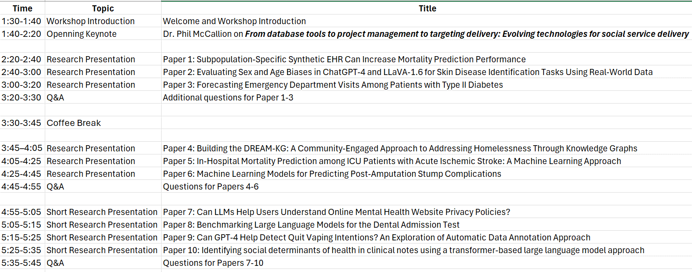

The 2024 International Workshop on AI Applications in Public Health and Social Services (AI-PHSS 2024)
in Conjunction with the 22nd International Conference of Artificial Intelligence in Medicine (AIME 2024)
Overview
The 2024 International AI Applications in Public Health and Social Services (AI-PHSS 2024) explores how AI technologies enhance public health and social services, focusing on revolutionizing surveillance, tackling health issues, and informing policy decisions. It highlights AI's potential to amplify community engagement, streamline social worker case management, and optimize service delivery. The workshop will bring together researchers, practitioners, healthcare professionals, and policymakers to share insights, exchange ideas, and foster collaborations in these critical areas. We invite submissions of papers and posters that investigate AI applications in public health and social services, such as predictive modeling for chronic disease management, real-world data analysis, sentiment analysis in social services, resource allocation optimization, and AI-driven decision support systems in public health and social services. Through interdisciplinary exchange, we aim to advance understanding of AI's role in addressing public health challenges and improving social service provision efficiency. We are inviting original research submissions as well as work-in-progress to the Workshop on AI Applications in Public Health and Social Services (AI-PHSS).
Topics
Topics of interest include but not limited to:
-
Semantics-based Data Mining and Analytics
- Predictive modeling for disease surveillance and outbreak detection.
- Sentiment analysis and natural language processing for community health engagement.
- AI-driven decision support systems for social workers in case management.
- Optimization algorithms for resource allocation in social service delivery.
- Machine learning approaches for early detection and intervention in public health issues.
- Data mining techniques for identifying patterns and trends in public health data.
- Ethical considerations in deploying AI technologies in public health and social services.
- Human-AI collaboration frameworks for enhancing public health and social services.
Important Dates
- May 27, 2024: Workshop submission deadline
- June 14, 2024: Notice of acceptance to the workshop (New Date)
- June 28, 2024: Journal submission invitation (New Date)
- July 12, 2024: Workshop podium presentations and posters (New Date)
- July 20, 2024: Journal manuscript deadline (New Date)
Submission Guidelines
We encourage submissions of (1) Full research papers (up to 10 pages, including references), appendix up to 10 pages; (2) Short and Demo papers (4 to 5 pages, including references) describing a short research project, a demonstration of implemented systems, or late-breaking results (work-in-progress); and (3) Poster abstract (1-2 pages). Papers should be formatted according to Springer’s LNCS format
All papers must be submitted online (EasyChair and choose): Workshop: AI Applications in Public Health and Social Services.
All papers are refereed through a single blind process.
Publication
High quality submissions will be invited to the open access journal Health Data Science, A Science Partner Journal (https://spj.science.org/page/hds/for-authors).
More information about the journal can be found on Health Data Science Journal Website.
Organizing
-
Chairs
- Huanmei Wu, PhD, Temple University College of Public Health
- Evangelia Katsoulakis, MD, University of South Florida (USF)
- Hongfang Liu, PhD, University of Texas Health Science Center at Houston (UTHealth Houston)
- Yanqiu Wang, MD, Tongji University, China
Publication Chair
- Omar Martinez, JD, MPH, MS, University of Central Florida
Program Committee
- Philip McCallion, Temple University
- Li Shen, University of Pennsylvania
- Josette Jones, Indiana University
- Ying Ding, University of Texas – Austin
- Tianlong Chen, University of North Carolina at Chapel Hill
- Susan VonNessen-Scanlin, Temple University
- Kaixiong Zhou, North Carolina State University
- Feifan Liu, UMass Chan Medical School
- Qianqian Song, University of Florida College of Medcine
- Falk Schwendicke, linikum der Universität München (Ludwig-Maximilians-University of Munich)
- Hao Liu, Montclair State University
Registration
- Participants have the flexibility to register solely for the AIPHSS workshop (one day on July 12th) or opt for a combined registration that includes both the AIME main conference and the workshop.
Workshop Schedule
